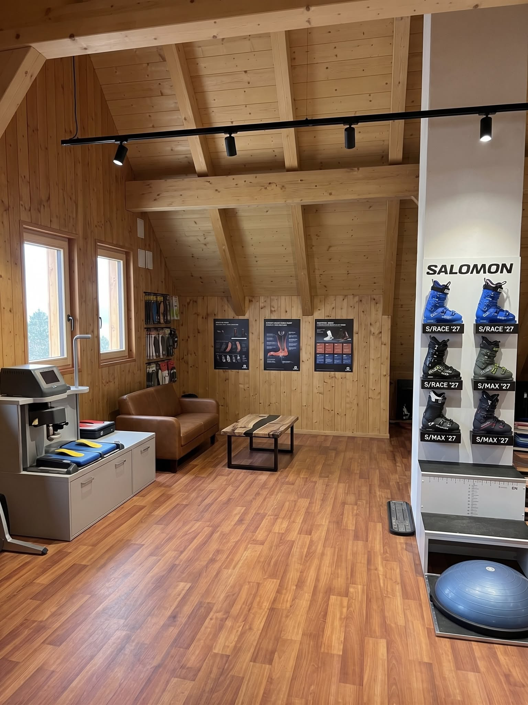
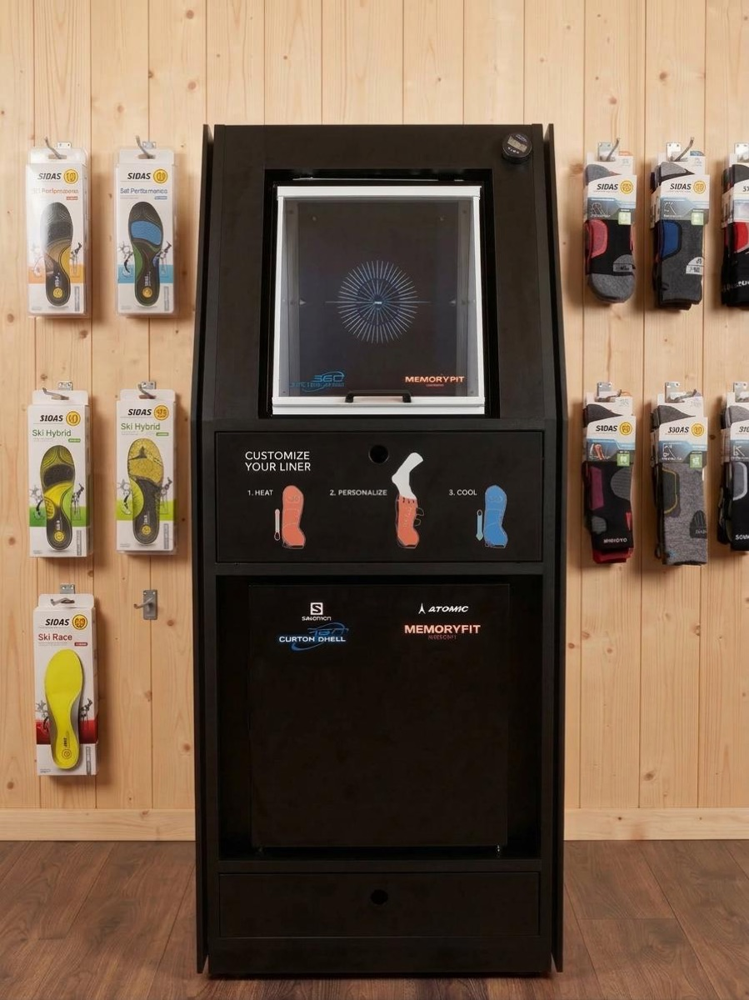

Vaše lyžáky mohou sedět dokonale
Pokud je koupíte se mnou. Tedy vlastně u mě.
Vybereme správnou botu a tu přizpůsobím na vaši nohu. Prodej lyžařských bot Salomon, tvarovaných vložek Sidas a bootfitting v Jizerských horách. Jízda bez bolesti a s maximální kontrolou.
Konec kompromisů mezi výkonem a pohodlím
Špičkové lyžování začíná od nohou.
Každé chodidlo je naprostý originál, ale lyžařské boty se vyrábějí jen v několika variantách. Dobré lyžování začíná tím, že je bota od začátku ve správné velikosti, šířce a objemu. A dobře vybraná bota je základ, na kterém se dá stavět.
Měkká vnitřní botička totiž v obchodě schová i to, že je skelet o číslo větší nebo o pár milimetrů širší, než by měl být. Na prodejně nic netlačí. Na svahu se pak noha v botě hýbe, zvedá se pata a přenos síly na hrany lyží je pryč. Proto nohu nejdřív změřím a botu vybírám podle čísel, ne podle pocitu na koberci.

Proč koupit lyžáky právě tady
Boty vám vybere a upraví člověk, který na nich umí i jezdit.
Vystudovaný bootfitter
Botu nevybírám podle toho, jak se v ní stojí na prodejně, ale podle změřeného chodidla – délky, šířky a výšky nártu. Úpravy skeletu i botičky dělám sám, ve vlastní dílně.
Instruktor a lektor s licencí APUL A
Jsem lyžařský instruktor, lektor a coach s nejvyšší licencí APUL A a se zkušenostmi ze závodního lyžování. Rozumím nejen botám, ale i tomu, jak se na nich jezdí – a co od nich na svahu opravdu potřebujete.
Sjezdovka 400 metrů od dílny
Boty si u mě nezkoušíte jen na koberci. Můžeme si dát pár jízd, a když něco tlačí, vrátíme se do dílny a doladíme to. Dokud to nebude perfektní.
Základní úpravy jsou v ceně bot
Ke každému zakoupenému páru patří diagnostika chodidla a úvodní tepelné přizpůsobení skeletu i vnitřní botičky přímo na vaši nohu. Když bude třeba vložka, vyrobíme ji na místě.
Prodej lyžařských bot Salomon
Nekupujte boty naslepo. Vyberte si skelet s expertem.
Předpokladem dokonalého fittingu je správně zvolený základní skelet. Jako specializovaný obchod nabízím prodej vybraných top modelů značky Salomon s inovativní technologií Custom Shell HD a revolučním systémem stahování BOA.
Skladem mám modely v několika šířkách skeletu, pánské i dámské. Nestandardní model nebo velikost objednám obratem.
V ceně každého zakoupeného páru je zahrnuta základní diagnostika a úvodní tepelné přizpůsobení skeletu a vnitřní botičky přímo na vaši nohu.
Jak u mě koupíte boty, které opravdu sedí?
Počítejte zhruba s dvěma hodinami. Dostanete kávu a možná se dozvíte i něco nového o lyžování.
Změříme chodidlo
Délka, šířka, výška nártu, postavení paty. Podíváme se i na vaše stávající boty a vložky, pokud je přinesete.
Vybereme správný skelet
Podle naměřených hodnot vybereme model a velikost, které jsou vašemu chodidlu nejblíž. Ne podle pocitu na koberci – ten měkká botička ošálí.
Přizpůsobím botu vaší noze
Tepelné tvarování skeletu a botičky je v ceně. Když bude třeba, vyrobíme vložku Sidas na míru nebo lokálně upravím skelet.
Vyzkoušíme na sjezdovce
400 metrů od dílny je svah. Když budete chtít, dáme pár jízd a hned vidíme, jestli boty sedí. Když ne, vrátíme se do dílny a upravíme je.
Záchrana vašich stávajících lyžáků
Rezervovat termínKoupili jste si lyžáky, které vás na svahu ničí?
Nemusíte utrácet za nové. Většinu skeletů a botiček dokážeme dokonale přizpůsobit vašemu chodidlu.
Botu vždy nejdřív zkontroluji na místě a řeknu vám na rovinu, jestli má úprava smysl. U některých nejlevnějších modelů bohužel konstrukce skeletu úpravy neumožňuje – proč nestačí bota za pět tisíc.
Závodní boty
Zavolej miZávodíte? Pak je vaše volba bot jasná.
Závodní model ze silného plastu, flexe 130 a výše. A pokud tu botu neupravíte, vaše chodidlo je ve svěráku 92 mm širokého skeletu.
Ale i závodní boty mohou být pohodlné. Nebolet. Můžete závodit a nemuset rozepínat přezky po každé jízdě. Závodní bota nemusí bolet.
Kompletní bootfitting dělám i na závodní boty jiných značek.
Bootfitting
Bootfitting je vysoce odborná a specializovaná disciplína úpravy (nejenom) lyžařských bot. I když máte vybraný správný typ boty ve správné velikosti, je nepravděpodobné, že by vám bota dokonale seděla. Možná vás maličko tlačí přes malíček. Nebo máte větší či menší výrůstky.
Mrznou vám v botech chodidla? Někdy stačí udělat vložku na míru.
Lyžařská bota má sednout jako ulitá. Obepnout těsně celé chodidlo (i ze stran a shora), aby každý sebemenší pohyb chodidla mohla bota okamžitě předat lyžím. To je výsledek dobrého bootfittingu.
Často kladené otázky
Co se mě lidé ptají nejčastěji, než přijdou.
Musím si u vás koupit nové lyžáky, nebo mi upravíte ty, které mám teď?
Obojí jde. Nejlepší výsledek – a nejméně práce navíc – dostanete s novou botou vybranou podle změřeného chodidla; základní úpravy u ní máte v ceně. Pokud máte boty se slušným skeletem a dobře zvolenou velikostí, rád je upravím. Jestli to má smysl, poznám při první návštěvě, takže je vezměte s sebou.
Všichni mi vždycky říkali, že lyžařské boty prostě musí tlačit. Je to pravda?
Není. Nebo tedy možná je 😊? Účel boty je přenést pohyb těla na lyže. Pokud máte příliš velkou botu a musíte si přezky dotáhnout příliš, abyste vůbec mohli lyžovat, je možné, že vás pak boty po hodině začnou tlačit – jenže bez toho byste nemohli lyžovat. Pokud máte v nějakém místě příliš úzkou botu, budou vás v tom místě tlačit vždycky.
Společný jmenovatel je, že bota není dostatečně přizpůsobená pro vaše chodidlo. Takže správná odpověď je, že dobře vybrané a upravené boty tlačit nemusí, nebudou, a dokonce ani tlačit nesmí.
Já mám normální nohu, opravdu je nutné na nové botě něco upravovat?
Když vybíráme boty v obchodě, hrají na nás výrobci takový trik. Uvnitř plastového skeletu je vložená vnitřní měkká botička. U sportovních a závodních bot je tenčí, ale turistické (levnější) modely mají tu botičku opravdu tlustou a měkkou. Takže v obchodě nám přijde, že nám bota krásně sedne, nikde nic netlačí, přitom botička všude doléhá. Až při lyžování zjistíme, že se chodidlo v botě hýbe, bota je vlastně příliš dlouhá, nebo máme botu příliš volnou kolem kotníků.
Takže abychom nemuseli nic upravovat, anebo jen minimálně, základ je vybrat správný typ boty. A u toho se nedá spoléhat na pocity, které měkká botička ošálí. Musíme nohu změřit – na šířku, na délku, na výšku nártu – a vybrat botu, která bude nejblíže vašemu chodidlu. Pak je klidně možné, že kromě standardních věcí, které jsou u nové boty v ceně, nebude potřeba upravovat vůbec nic. Ale to se dozvíme až po změření.
Proč mi nestačí bota za 5–7 tisíc? Jezdím na hory 2× za rok, potřebuji drahou botu?
Potřebujete, ale ne z toho důvodu, že je drahá 😊 Ty důvody jsou v podstatě dva. A oba souvisí s cenou, byť každý jiným způsobem.
I výrobci bot ví, že se klientům nechce platit moc peněz za něco, co využijí zdánlivě jen málokrát. A že nechtějí trávit vybíráním lyžáků moc času. Takže boty v cenové kategorii „nejsem žádný velký lyžař a nechci za boty moc platit“ jsou jednoduché boty, ve kterých se cítíte dobře na prodejně. Mají rovnější komín, takže se vám v tom dobře stojí v obchodě. Jsou hodně široké, aby opravdu, ale opravdu vůbec nikde netlačily, a prostor je vyplněný měkkou tlustou botičkou. To jsou ale všechno věci, které jdou proti tomu, co od boty potřebujete na sjezdovce.
Druhý důvod, proč vám taková bota nestačí, je ten, že výrobce šetří i na výbavě takové boty. Je z horšího plastu, má horší přezky nebo jdou hůře nastavit. Nemá žádnou možnost upravit komín boty podle vaší holeně. Chybí horní power strap, nebo je to jen jednoduchá páska na suchý zip. Ve chvíli, kdy je na takové botě potřeba něco upravit, je to velký problém.
Jak dlouho trvá úprava bot (bootfitting) nebo výroba vložek?
Záleží na rozsahu práce. Základní analýza nohy a tvarování vložek na míru obvykle zabere zhruba 45 až 60 minut. Větší mechanické zásahy (frézování skeletu, canting nebo aplikace vypěňovacích botiček) mohou klidně trvat hodinu, dvě nebo i déle, podle náročnosti a rozsahu úprav. Proto je opravdu nejlepší se domluvit předem, abych se vám mohl plně věnovat.
Musím se objednávat?
Ano, doporučuji domluvit si termín předem (telefonicky nebo přes formulář), a je jedno, jestli budeme vybírat novou botu, nebo upravovat vaši stávající.
Každá noha je jiná. Abychom mohli dobře vybrat botu, je nutné udělat základní analýzu chodidla, vyzkoušet model boty, vyzkoušet správnou velikost, zjistit, zda a jaké další úpravy budou potřeba. To je proces, který trvá desítky minut. Pokud přijdete se svou vlastní botou k úpravě, ten čas je v podstatě podobný. Pořád musíme nohu přeměřit atd.
Poctivý bootfitting vyžaduje klid, čas a prostor, abychom vše správně změřili a upravili bez zbytečného spěchu. Ale nebojte. Dostanete kávu, a třeba se dozvíte i spoustu nových věcí o lyžování 😊.
Co si mám vzít s sebou?
Vezměte si s sebou své stávající lyžařské boty (pokud je máte) a hlavně funkční lyžařské ponožky, ve kterých běžně jezdíte. Pokud máte staré vložky nebo řešíte specifické zdravotní ortopedické vložky do běžných bot, přineste je také pro porovnání.
A je dobré nemít úplně těsné džíny, budeme potřebovat nohavice vyhrnout ke kolenům 😊
Lze upravit i boty, které jsem si koupil jinde?
Ano. Pomůžu vám s úpravou, frézováním, řešením otlaků nebo výměnou vložek i u bot, které jste pořídili jinde. Vždy je ale nejdříve nutné botu zkontrolovat na místě a posoudit, zda má úprava smysl a konstrukce skeletu to umožňuje. Viz otázka výše, proč vám nestačí bota za 5 tisíc.
Jaký je rozdíl mezi hotovou vložkou a vložkou tvarovanou na míru? A můžu použít ortopedickou vložku z bot na běhání?
Hotové vložky (např. z řady Sidas Ski) poskytují skvělou oporu klenby a stabilizaci nohy ve skeletu hned po vybalení. Vložky tvarované na míru se naproti tomu detailně natvarují přesně podle anatomie vašeho chodidla, čímž dosáhneme maximálního možného přenosu síly a absolutního pohodlí. Rozdíl je tedy v úrovni podpory, kterou vložka poskytne. Jestli bude stačit hotová vložka, nebo budeme potřebovat vyrobit vložku na míru, se ovšem dozvíme, až se na vaše chodidlo podíváme.
A vložky z bot na běhání bohužel použít nejdou. Vložka musí perfektně sednout do boty a ta, jak jsme si už řekli, je každá jiná.
Zastavte se v dílně
Najdete mě v novém podkrovním studiu v srdci Jizerských hor, 400 metrů od sjezdovky. Pracuji výhradně na předchozí objednání. Díky tomu mám na vaše nohy stoprocentní soustředění a garantuji vám klidný prostor bez čekání. Výběr bot i standardní bootfitting trvá zhruba dvě hodiny, počítejte raději s malou rezervou.